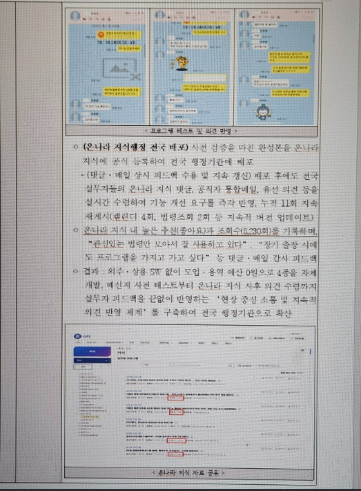
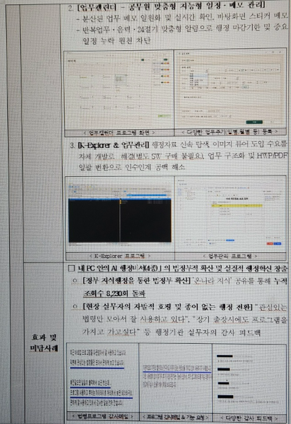

(정부 온나라 지식 누적 조회수 8,230회 돌파 및 병무청 지식평가단 「우수 지식」 공식 선정)
| 사례 명칭 | 「내 PC 안의 행정비서」 업무지원 4종 | 소속 / 직급 | 경기북부병무청 고객지원과 전산8급 조완희 |
|---|---|---|---|
| 개발 방식 | 생성형 AI(바이브 코딩) 1인 자체 개발 | 도입 예산 | 외주 용역 및 SW 구매비 0원 (전액 절감) |
| 지식행정 실적 | 온나라 지식 누적 조회 8,230건 (단일 3,871건) | 지식평가 인정 | 병무청 지식평가단 「우수 지식(16점)」 획득 |
| 4종 프로그램 |
1. 스마트 법령 도우미 (PC법령): 국가법령 연계, AI 조항 분석 및 절차 플로우차트 자동 생성 2. 업무 캘린더 (K-캘린더): 바탕화면 메모, 반복 일정 알람, 법정 민원기한 1초 자동 계산기 3. 업무관리 프로그램: 한글(HWP) 파일 연동, 공직 서식함, 후임자 1초 복원 원클릭 인수인계 4. K-탐색기 (파일 관리): 행정 분산자료 신속 탐색, 이미지 뷰어 자체 탑재로 상용 SW 대체 |
||
각종 행정시스템 도입에도 불구하고, 공무원 개개인의 PC 환경에서는 여전히 수많은 종이 출력, 포스트잇 수기 메모, 분산된 폴더 정리, 인사이동 시 업무 단절이 반복되고 있었습니다. 이에 현장 실무자의 일상 업무를 직접 지원하는 맞춤형 도구 개발의 필요성이 대두되었습니다.
단순한 소프트웨어 배포가 아니라, 공무원이 법령 검토 ➔ 일정 관리 ➔ 자료 탐색 ➔ 업무 인계로 이어지는 전 업무 주기를 빈틈없이 지원하여 업무 처리시간을 획기적으로 단축하고자 하였습니다.
상용 소프트웨어는 예산과 보안 규정 때문에 공직 사회 도입이 불가능했습니다. 인터넷이 안 되는 환경에서도 안전하고, 설치 권한 없이 단일 파일로 바로 실행되며, 누구나 3초 만에 쓸 수 있는 도구를 자체적으로 구현해야 했습니다.


사전 검증을 마친 프로그램을 온나라 지식에 공식 등록하여 배포한 결과, 누적 조회수 8,230회를 돌파하고 병무청 지식평가단에서 「우수 지식(16점)」으로 인정받았습니다. 배포 후에도 댓글·메일 의견을 수렴하여 누적 11회 이상 지속 재게시 및 업데이트를 단행하였으며, 보안 취약 라이브러리 제보 접수 시 당일 즉시 제거 및 대체 패치를 배포하여 완벽한 신뢰성을 유지했습니다.
| 민원 접수 일시 | 2026-10-02 (금) 16:30 | 법정 처리기한 | 5일 (법정 근무일 기준) |
|---|---|---|---|
| 자동 제외 일자 | 개천절, 일요일, 한글날, 주말 제외 | 최종 만료일 | 2026-10-12 (월) 16:30 (1초 만에 오차 0% 산출) |
온나라 지식을 통해 8,230건의 조회를 기록하며 개별적으로 입증된 4개 프로그램(캘린더, 업무관리, K탐색기, PC법령)의 기능과 8,000여 건의 현장 피드백을 모아, 공무원이 PC를 켜는 순간 모든 행정 업무를 한곳에서 끝낼 수 있는 단 하나의 통합 솔루션 『K-업무수첩』으로 고도화했습니다.
“공직의 일하는 방식을 바꾸는 진정한 힘은 거창한 외부 시스템이 아니라,
현장 공무원의 절실함과 생성형 AI가 결합한 '실행력과 나눔의 문화'에 있습니다.”